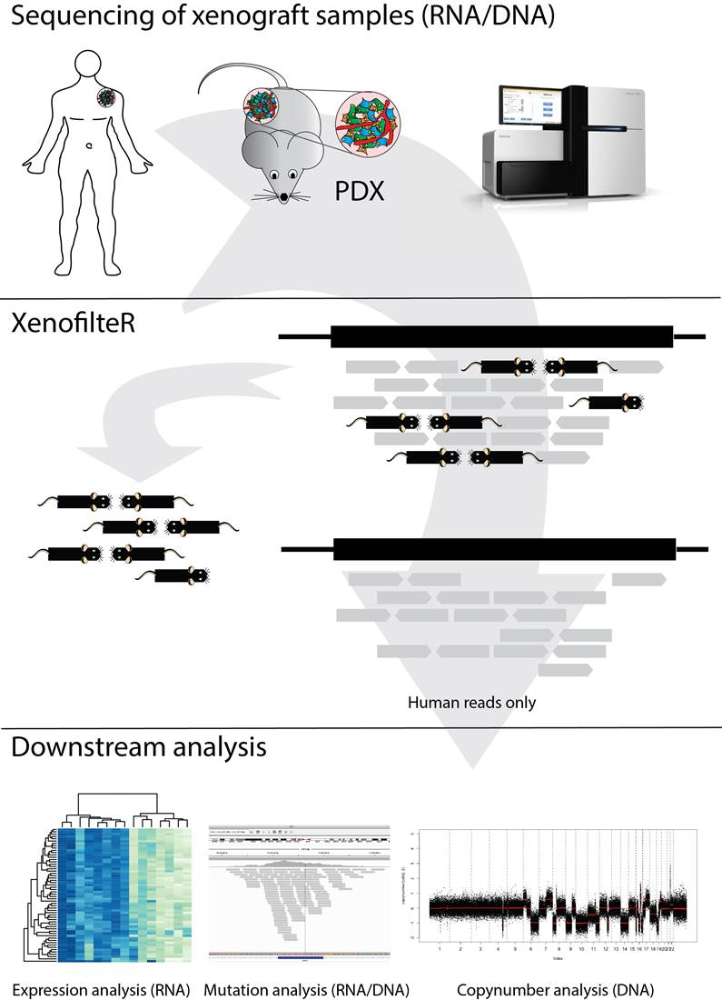

De novo viral quasispecies assembly using overlap graphs
Jasmijn Baaijens, CWI
March 16, 2018
Abstract
A viral quasispecies, the ensemble of viral strains populating an infected person, can be highly diverse. For optimal assessment of virulence, pathogenesis and therapy selection, determining the haplotypes of the individual strains can play a key role. As many viruses are subject to high mutation and recombination rates, high-quality reference genomes are often not available at the time of a new disease outbreak. Reference free approaches therefore have clear benefits.
We present SAVAGE, a computational tool for de novo assembly of virus-strain-specific haplotypes. SAVAGE makes use of FM-index based data structures for constructing overlap graphs from patient sample data, where edges, based on sound statistical considerations, reflect that reads stem from identical haplotypes. SAVAGE then systematically reduces redundancies in the overlap graph, thereby imposing polynomial bounds on the number of maximal cliques. For reconstructing individual haplotypes, SAVAGE follows a novel, iterative overlap-layout-consensus scheme, based on enumeration of maximal cliques.
Both on simulated and real virus data, SAVAGE outperforms generic and specialized de novoassembly tools, often drastically, in relevant aspects. When run in reference mode, SAVAGE compares very favorably with specialized reference dependent viral quasispecies assemblers. Software is available at Bioconda and https://bitbucket.org/jbaaijens/savage.
Simulated linear test applied to quantitative proteomics
Thang Pham, VU University Medical Center
July 7, 2017
Abstract
Omics studies aim to find significant changes due to biological or functional perturbation. However, gene and protein expression profiling experiments contain inherent technical variation. In discovery proteomics studies where the number of samples is typically small, technical variation plays an important role because it contributes considerably to the observed variation. Previous methods place both technical and biological variations in tightly integrated mathematical models that are difficult to adapt for different technological platforms. Our aim is to derive a statistical framework that allows the inclusion of a wide range of technical variability.
Here we introduce a new method called the simulated linear test, or the s-test, that is easy to implement and easy to adapt for different models of technical variation. It generates virtual data points from the observed values according to a pre-defined technical distribution and subsequently employs linear modeling for significance analysis. We demonstrate the flexibility of the proposed approach by deriving a new significance test for quantitative discovery proteomics for which missing values have been a major issue for traditional methods such as the t-test. We evaluate the result on two label-free (phospho) proteomics datasets based on ion-intensity quantitation.
Integrating Cancer Genomics Data using Autoencoders
Ted Meeds, UvA Machine learning and VU bioinformatics
June 9, 2017
Abstract
Integrating multiple sources of molecular measurements (such as RNA, micro RNA, and methylation data) across pan-cancer cohorts is a promising approach to learn general, non-cohort specific, disease profiles. These profiles provide rich representations of patients that can be used to learn novel subtypes and biomarkers, and are useful for survival prognoses and potentially drug-discovery. However, combining cohorts is challenging in part because the main signal in data is tissue-specific. Special care has to be made to avoid simply "learning the tissue". In this talk I will describe an approach based on the variational auto-encoder, popular in the deep learning community, to learn an unsupervised latent representation of patients (the disease profile) that explicitly removes tissue/cohort information. Preliminary results indicate that the disease profiles carry little information about tissues and by doing so improves the profiles' usefulness on other validation tasks, such as predicting cohort-specific survival and DNA mutations.
Metabolism in disease: target the system!
Jurgen Haanstra, VU - Systems Bioinformatics
May 12, 2017
Abstract
In the treatment of both cancer and infectious diseases, an important challenge is to design selective drugs that target the cancer cell or pathogen without harming the patient. Often, drug-design strategies try to find a molecular target that is both essential and unique to the diseased cell. But in many cases such options are limited. For example, cancer cells originate from healthy cells and their genomes are virtually identical to those of healthy cells. Therefore, unique cancer proteins are rare. Analogously, eukaryotic pathogens tend to be biochemically similar to some cells of the host. In such cases we may need to drop the criterion of uniqueness and seriously consider drug targets that are part of pathways that also occur in the host and that may even be essential there.
Cellular proliferation and survival depend on metabolism for the supply of free energy and molecular building blocks. Metabolic pathways are therefore promising drug targets if we want to kill cancer cells or pathogens. But which protein in the metabolic network should we target to achieve this? And is it possible to selectively target metabolism in the disease cells and not in the healthy cells? To answer these questions we study metabolism as a system rather than focussing on individual proteins. I will show how our systems-biology approach, combining in silico modelling and in vitro/in vivo experimentation, can identify potent and selective drug targets.
Rscreenorm: A novel pre-processing method for normalizing multiple genetic screens
Costa Bachas, VUmc - Department of Otolaryngology/Head-Neck Surgery
April 7, 2017
Abstract
High-throughput genetic screens, e.g. using small-interfering RNA (siRNA) or genome-editing via CRISPR- Cas9, are widely used for functional genomics and drug target discovery studies. There is great interest in combining genetic screening datasets from multiple sources for (new) analyses. This is hampered by technical variation, which is not corrected by current pre-processing methods. Insufficient preprocessing may lead to inaccurate results. In concordance, reproducibility of genetic screens is under debate in the field. Here we propose a genetic screen pre-processing method, rscreenorm, that uses assay controls to correct for such technical effects, making screening values more comparable between replicates and reducing analysis error rates.
rags2ridges: Network-based modeling and analysis of high-dimensional omics data
Carel Peeters, VUmc - Department of Biostatistics
March 10, 2017
Abstract
A pathway can be understood as a collection of molecular features working interdependently to regulate some biochemical process. Biochemical (signaling) pathways are of interest from a systems biology perspective. Understanding disease-specific pathway-dysregulation is an important step towards a mechanistic understanding of the disease process. There are many popular databases that represent biochemical pathways as networks, such as, e.g., KEGG and Reactome. However, these databases are manually curated from (limited experiments described in) the literature, leaving many researcher degrees of freedom. The result is systems biology databases build upon reductionist input and wildly different representations of the same pathway between databases.
Hence, we take interest in data-based (instead of database) networks, i.e., we aim to reverse engineer biochemical pathways from high-dimensional omics data. The data-based approach is an exploratory systems approach by nature and may supplement database knowledge. The rags2ridges R-package for network-based modeling of high-dimensional omics data will be introduced. This talk will then present the basic principles underlying rags2ridges and its functionality. Specifically, we will focus on how rags2ridges (i) can incorporate database knowledge in data-based network extraction, (ii) helps in translating extracted networks into tangible information, and (iii) can support integrative and meta-analytic network modeling. rags2ridges is available from CRAN and GitHub.
Adaptive group-regularized logistic elastic net regression
Magnus Munch, VUmc - Department of Biostatistics
February 10, 2017
Abstract
In high dimensional data settings, additional information on the variables is often available. Examples of such external information in genomics research are: (a) p-values on the same variables, obtained from a previous study, (b) information from a publicly available database such as pathway membership, (c) genomic annotation (e.g. the location on the genome), or (d) response independent summary statistics like sample standard deviation of the variables. The inclusion of this information into the analysis may benefit classification performance and variable selection, but is not straightforward in the standard regression setting. A solution to this problem is group-regularized (logistic) elastic net regression, where each penalty parameter corresponds to a group of variables. The grouping of the variables is based on a partitioning according to the external information. The method makes use of the Bayesian formulation of logistic elastic net regression to estimate both the model and penalty parameters in an approximate empirical Bayes - variational Bayes framework. Simulation results show benefits in including the extra information on the variables.
XenofilteR: separate graft from host reads in xenograft sequencing
Oscar Krijgsman, NKI
December 9, 2016
Abstract
Human tumour samples or cancer cell lines, transplanted into mice are widely used as a model to study cancer. However, analysis of high-throughput sequence data of tumour material derived from these xenografts can be challenging. The data not only contains reads that originate from the cancer cells but also reads from the mouse. We developed the R-package XenofilteR for filtering host from graft reads in sequence data based on the edit distance of a sequence read. XenofilteR removes >99.9% of mouse reads from the sequence data while retaining the human tumor reads. We show we outperform currently available tools based on in-silico mixing experiments of mouse and human sequence data and mutation calling performed on PDX and matching tumor tissue.

Deep Learning on Dental Plaque Images
Sultan Imangaliyev, VUmc
November 18, 2016
Abstract
Background: Images are an important data source for diagnosis and treatment of many diseases. The manual classification of images may lead to misdiagnosis or mistreatment due to subjective errors. Hence, many areas of biomedicine need better, objective and high-throughput automated image classification models. This problem is also of current interest in oral healthcare, when visual assessing of dental plaque images. Many dental diseases are caused by interactions between the host and dental plaque. Assessment of such plaque accumulation can be used to identify individuals at risk. In this study we assess performance of an automated image classification model based on Deep Convolutional Neural Network applied to Quantitative Light-induced Fluorescence dental plaque images.
Results: The Deep Learning model outperforms other state of the art classification models such as Support Vector Machines Classifier, Gaussian Naive Bayes Classifier, Gradient Boosting Classifier, K-Neighbors Classifier, and Random Forest Classifier. Deep Learning achieves a 0.76 F1-score on the test dataset, as compared with 0.62 yielded by the best of the other models, i.e., Support Vector Machines Classifier. Deep Learning directly benefits from multi-channel representation of the images resulting in improved performance when, besides the Red colour channel, additional Green and Blue colour channels were used. Visualization of filtered images indicated that the Convolutional Neural Network learns invariant feature representations which discriminate images with different levels of red fluorescent plaque accumulation.
TANDEM: a two-stage approach to maximize interpretability of drug response models based on multiple molecular data types
Nanne Aben, NKI
October 21, 2016
Abstract
Motivation: Clinical response to anti-cancer drugs varies between patients. A large portion of this variation can be explained by differences in molecular features, such as mutation status, copy number alterations, methylation and gene expression profiles. We show that the classic approach for combining these molecular features (Elastic Net regression on all molecular features simultaneously) results in models that are almost exclusively based on gene expression. The gene expression features selected by the classic approach are difficult to interpret as they often represent poorly studied combinations of genes, activated by aberrations in upstream signaling pathways.
Results: To utilize all data types in a more balanced way, we developed TANDEM, a two-stage approach in which the first stage explains response using upstream features (mutations, copy number, methylation and cancer type) and the second stage explains the remainder using downstream features (gene expression). Applying TANDEM to 934 cell lines profiled across 265 drugs (GDSC1000), we show that the resulting models are more interpretable, while retaining the same predictive performance as the classic approach. Using the more balanced contributions per data type as determined with TANDEM, we find that response to MAPK pathway inhibitors is largely predicted by mutation data, while predicting response to DNA damaging agents requires gene expression data, in particular SLFN11 expression.
Availability and Implementation: TANDEM is available as an R package on CRAN (for more information, see http://ccb.nki.nl/software/tandem).